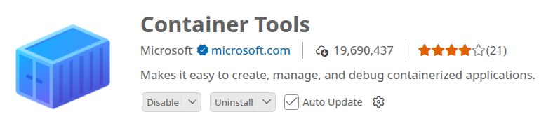
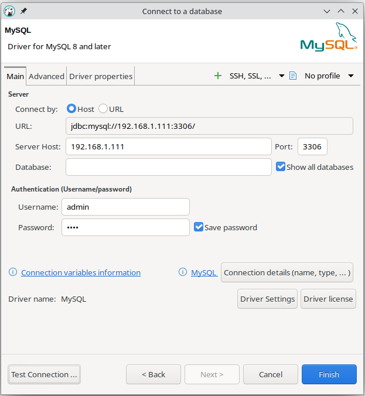
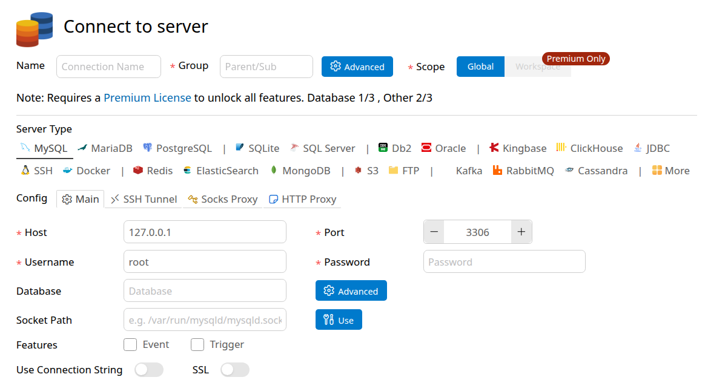
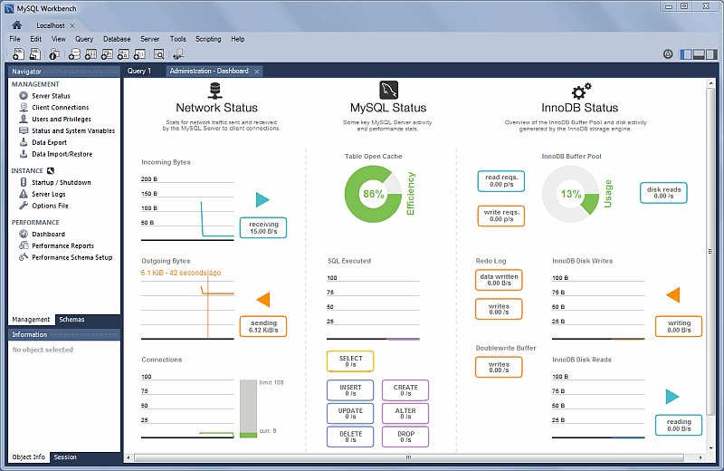
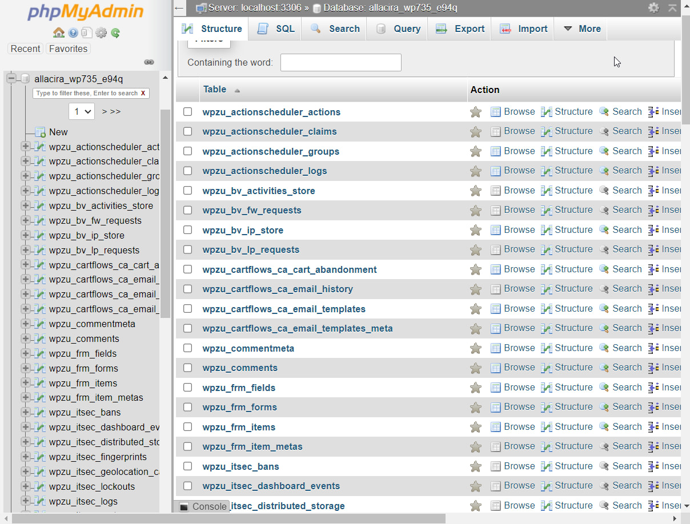

Unitat 3.1. Instal·lació de MySQL
1. El SGBD MySQL
MySQL és un sistema de gestió de bases de dades relacional (SGBD) (anglès RDBMS - Relational DataBase Management System) multi-fil (multithread) i multiusuari, que usa el llenguatge SQL (Structured Query Language).

MySQL ha esdevingut molt popular gràcies a la seva velocitat en executar consultes i el seu suport de forma nativa per part del llenguatge PHP, en l'elaboració d'aplicacions web i en l'entorn del programari lliure.
Es pot fer ús de MySQL en aplicacions de tota mena (web, d'escriptori o d'altres) de forma lliure i gratuïta sota les condicions de la llicència GPL. Si es vol integrar MySQL com a part d'un producte privatiu cal adquirir una llicència d'ús específica per a aquest propòsit.
MySQL és un dels components de l'arquitectura LAMP (de Linux - sistema operatiu) i la WAMP (de Windows - sistema operatiu). Les tres sigles que segueixen (A,M i P) fan referència al conjunt format per Apache (servidor web), MySQL (base de dades) i PHP (llenguatge de programació).
MySQL pertanyia a l'empresa sueca MySQL AB. La companyia desenvolupava i mantenia el programari en la versió lliure i la comercial. Fins que el 16 de gener del 2008, Mysql AB fou adquirida per Sun Microsystems. I el 20 d'abril del 2009, Oracle Corporation va adquirir Sun Microsystems i, per tant, MySQL.
Nosaltres utilitzarem la versió Community Server, que és la versió lliure i gratuïta de MySQL.
MariaDB
MariaDB és un sistema de gestió de bases de dades relacional (SGBD) que és un fork de MySQL. Va ser creat per l'equip original de desenvolupadors de MySQL després que Oracle adquirís Sun Microsystems, amb l'objectiu de mantenir una alternativa lliure i oberta a MySQL. MariaDB és compatible amb MySQL en termes de sintaxi i funcionalitat, i sovint s'utilitza com a substitut directe de MySQL en moltes aplicacions.

2. Instal·lació de MySQL
Podem instal·lar MySQL de diverses maneres, depenent del sistema operatiu que estiguem utilitzant. A continuació, es detallen els passos generals per a la instal·lació en els sistemes operatius més comuns.
2.1. Instal·lació en Ubuntu Server
Ubuntu Server és una distribució de Linux basada en Debian, dissenyada per a servidors. La instal·lació de MySQL en Ubuntu Server es pot realitzar mitjançant el gestor de paquets apt. A continuació, es mostren els passos bàsics per a la instal·lació:
-
Actualitzar els repositoris: Abans d'instal·lar qualsevol paquet, és recomanable actualitzar la llista de paquets disponibles. Obriu una terminal i executeu:
1sudo apt update -
Instal·lar MySQL Server: Executeu la següent comanda per instal·lar MySQL Server:
1sudo apt install mysql-server -
Verificar la instal·lació: Un cop finalitzada la instal·lació, podeu verificar que MySQL s'ha instal·lat correctament executant:
1mysql --version -
(OPCIONAL) Configurar la seguretat de MySQL: És recomanable executar l'script de seguretat proporcionat per MySQL per configurar la contrasenya de l'usuari root i altres opcions de seguretat:
1sudo mysql_secure_installationEn aquest curs no farem servir aquest script, ja que volem uqe la configuració de MySQL siga la més simple possible. Però en un entorn real, és molt recomanable executar aquest script per millorar la seguretat del servidor MySQL.
-
Iniciar el servei MySQL: Assegureu-vos que el servei MySQL estiga en funcionament:
1sudo systemctl status mysqlSi no estiguera en funcionament, podeu iniciar-lo amb:
1sudo systemctl start mysqlI detindre'l amb:
1sudo systemctl stop mysql -
Accedir a MySQL: Per accedir a la línia de comandes de MySQL, executeu:
1sudo mysqlAmb aquesta instrucció, podem començar a treballar directament amb l'usuari root de MySQL.
Podem veure la versió amb:
1SELECT VERSION();Tancarem la sessió amb:
1exit;
2.1.1. Configuració inicial de MySQL
Creació d'un usuari administrador
Ara per ara, només podem accedir a MySQL amb l'usuari root localment, però no ho podem fer remotament per motius de seguretat. Per a poder accedir a MySQL remotament, cal configurar un usuari administrador que puga accedir remotament. A continuació, es mostren els passos bàsics per a la configuració inicial:
-
Accedir a MySQL com a root:
1sudo mysql -
Crear un usuari administrador:
1 2 3
CREATE USER 'admin'@'%' IDENTIFIED BY '1234'; GRANT ALL PRIVILEGES ON *.* TO 'admin'@'%' WITH GRANT OPTION; FLUSH PRIVILEGES;Amb la primera instrucció, creem un usuari anomenat
adminque pot accedir des de qualsevol host (%) amb la contrasenya1234.La segona instrucció li atorga tots els privilegis sobre totes les bases de dades i taules (
*.*), i li permet concedir privilegis a altres usuaris amb l'opcióWITH GRANT OPTION.La tercera instrucció actualitza els privilegis per assegurar-se que els canvis tinguen efecte immediatament.
-
Eixir de MySQL:
1exit; -
Accedir a MySQL amb el nou usuari:
1mysql -u admin -pIntroduïu la contrasenya quan se us demane.
Una vegada dins, podem comprovar que tenim els privilegis adequats amb:
1SHOW GRANTS FOR 'admin'@'%';
Configurar MySQL per permetre connexions remotes
Per defecte, MySQL només escolta connexions des de localhost. Per permetre connexions remotes, cal editar el fitxer de configuració de MySQL. Obriu el fitxer amb un editor de text, com ara nano:
1 | |
Cerqueu la línia que conté bind-address i canvieu-la a:
1 | |
Nota
També trobem la directiva mysqlx-bind-address, que serveix per a la connexió amb el protocol MySQL X. Si volem habilitar també aquest protocol per a connexions remotes, podem canviar-la a 0.0.0.0.
Això permetrà que MySQL escolte connexions des de qualsevol adreça IP.
Reinicieu el servei MySQL per aplicar els canvis:
1 | |
Per a connectar-nos remotament a un servidor MySQL, necessitem conèixer l'adreça IP del servidor i el port.
- Adreça IP: És l'adreça de la màquina on està instal·lat MySQL. Aquesta adreça pot ser una adreça IP local (per exemple, 192.168.x.x) o una adreça IP pública si el servidor és accessible des d'Internet.
- Port: És l'adreça local del servidor on s'executa un servei. Per defecte, MySQL utilitza el port 3306 per a les connexions. Si no s'ha canviat la configuració, aquest serà el port que haurem d'utilitzar.
Info
Es pot canviar el port de MySQL editant el fitxer de configuració mysqld.cnf descomentant i modificant la directiva port = 3306 a un altre número de port. Després de fer aquest canvi, cal reiniciar el servei MySQL per aplicar-lo.
Esbrineu l'adreça IP del servidor MySQL amb:
1 | |
Ara, proveu a connectar-vos a MySQL des d'una màquina remota utilitzant l'usuari admin i la contrasenya 1234.
1 | |
Si encara no teniu un client MySQL instal·lat a la màquina remota, veurem com fer-ho en la següent secció.
2.2. Instal·lació local en Ubuntu
Els passos per instal·lar MySQL en una màquina local amb Ubuntu són similars als de la instal·lació en un servidor, ja que Ubuntu és una distribució de Linux.
2.3. Instal·lació en Windows
Per a instal·lar MySQL en Windows, podeu seguir aquests passos:
- Descarregar MySQL Installer: Visiteu el lloc web oficial de MySQL i descarregueu l'instal·lador per a Windows. Podeu trobar-lo a MySQL Downloads.
- Executar l'instal·lador: Feu doble clic al fitxer descarregat per iniciar l'instal·lació.
- Seguir les instruccions de l'instal·lador: L'instal·lador us guiarà a través del procés d'instal·lació. Podeu triar entre una instal·lació típica o personalitzada segons les vostres necessitats.
- Configurar MySQL: Durant la instal·lació, se us demanarà que configureu l'usuari root i la contrasenya. També podeu configurar altres opcions com el port i el tipus de servei.
- Finalitzar la instal·lació: Un cop completada la instal·lació, podeu iniciar el servei MySQL i començar a utilitzar-lo.
2.4. Ús d'un entorn virtual amb Docker
Per a utilitzar MySQL en un entorn virtual amb Docker, podeu seguir aquests passos:
- Instal·lar Docker: Si encara no teniu Docker instal·lat, podeu descarregar-lo i instal·lar-lo des del lloc web oficial de Docker: Docker Downloads.
-
Descarregar i executar la imatge de MySQL: Obriu una terminal i executeu la següent ordre per descarregar la imatge oficial de MySQL:
1docker run --name mysql -e MYSQL_ROOT_PASSWORD=1234 -d mysqlSi ja tenim un servidor MySQL en funcionament, hem de llançar el contenidor amb un port diferent, per exemple el 3307:
3. Executar un intèrpret d'ordres al contenidor:1docker run --name mysql -e MYSQL_ROOT_PASSWORD=1234 -p 3307:3306 -d mysql1docker exec -it mysql mysql -u root -p1234
Ara podrem crear l'usuari admin tal com hem vist al punt corresponent a la configuració inicial de MySQL en un servidor.
Una vegada creat l'usuari admin, podrem connectar-nos al contenidor MySQL des de la màquina host amb:
1 | |
Warning
Hem de posar l'adreça IP 127.0.0.1 en lloc de localhost, ja que el contenidor MySQL està en un entorn virtual i no podem connectar-nos amb localhost.
Info
Pots usar l'extensió Container Tools de Visual Studio Code per gestionar contenidors Docker de manera més visual.


3. Instalació del client MySQL
Per a connectar-nos a un servidor MySQL remot, necessitem un client MySQL instal·lat a la nostra màquina local.
El client MySQL és una eina que ens permet interactuar amb el servidor MySQL mitjançant la línia d'ordres. Al servidor ja tenim un client MySQL instal·lat, però si volem connectar-nos des d'una màquina remota, hem d'instal·lar el client MySQL a aquesta màquina.
Els clients MySQL estan disponibles per a diversos sistemes operatius, com ara Linux, Windows i macOS. A més, poden ser utilitzats tant en entorns de línia d'ordres com en interfícies gràfiques.
3.1 Instal·lació del client MySQL en Ubuntu
Instal·lar el client MySQL en Ubuntu és tan simple com actualitzar els repositoris i instal·lar el paquet corresponent:
1 2 | |
3.2 Instal·lació del client MySQL en Windows
La instal·lació del client MySQL en Windows es pot realitzar mitjançant l'instal·lador de MySQL, que inclou tant el servidor com el client. Durant la instal·lació, podeu seleccionar només el client si no necessiteu instal·lar el servidor.
Descarregar MySQL Installer per a Windows
3.3. Instal·lació de DBeaver
DBeaver és una eina de gestió de bases de dades que proporciona una interfície gràfica per interactuar amb diversos sistemes de gestió de bases de dades, incloent MySQL. És una aplicació multiplataforma i és molt útil per a desenvolupadors i administradors de bases de dades.

Instal·lació de DBeaver en Ubuntu
Per instal·lar DBeaver en Ubuntu, podeu utilitzar el gestor de paquets apt:
1 2 3 | |
Instal·lació de DBeaver en Windows
Per instal·lar DBeaver en Windows, podeu descarregar l'instal·lador des del lloc web oficial de DBeaver:
Descarregar DBeaver per a Windows
Connexió a un servidor MySQL amb DBeaver
Per a connectar-vos a un servidor MySQL amb DBeaver, seguiu aquests passos.
Primer, crearem una connexió per al servidor de la màquina virtual d'Ubuntu Server:
- Obriu DBeaver i feu clic a "New Database Connection" (Nova connexió de base de dades).
- Seleccioneu "MySQL" com a tipus de base de dades i feu clic a "Next" (Següent).
- Tria el driver a usar, nosaltres usarem el corresponent a la versió 8 de MySQL.
- En el diàleg de configuració de la connexió, introduïu l'adreça IP del servidor MySQL, el port (
3306per defecte), el nom d'usuari (admin) i la contrasenya (1234).
- Feu clic a "Test Connection" (Provar connexió) per assegurar-vos que la connexió és correcta. Si tot està configurat correctament, hauria de mostrar un missatge indicant que la connexió s'ha establert amb èxit.
- Feu clic a "Finish" (Finalitzar) per completar la configuració de la connexió.

Si ens volem connectar al servidor MySQL de Docker, la IP ha de ser 127.0.0.1 i el port que hem configurat abans (per defecte 3306).
3.4 Altres clients MySQL
Altres clients MySQL que podem utilitzar són:
- Extensió de VSCode Database Client JDBC: permet connectar-se a diversos gestors debases de dades directament des de l'editor de codi Visual Studio Code.

- MySQL Workbench: és una eina oficial de MySQL que proporciona una interfície gràfica per al disseny, desenvolupament i administració de bases de dades MySQL. Permet crear i gestionar esquemes, executar consultes SQL, visualitzar dades i molt més.

- PHPMyAdmin: és una aplicació web escrita en PHP que permet administrar bases de dades MySQL a través d'una interfície web. És molt popular per a la gestió de bases de dades en entorns web i ofereix funcionalitats com la creació de bases de dades, gestió d'usuaris, execució de consultes SQL i exportació/importació de dades.
